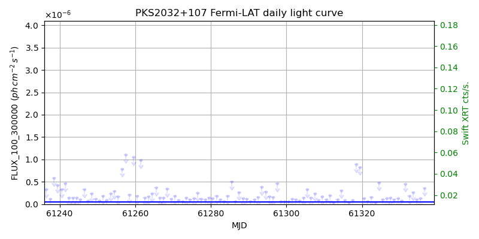
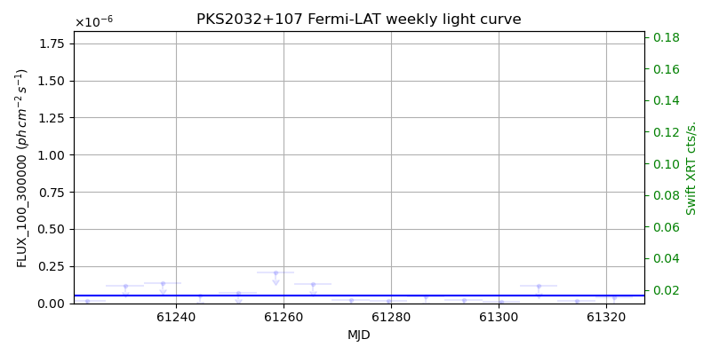
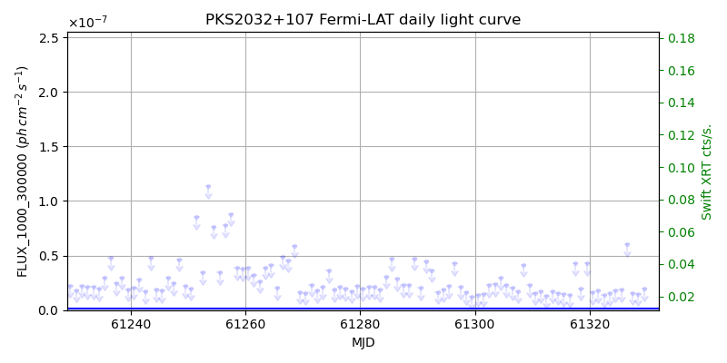
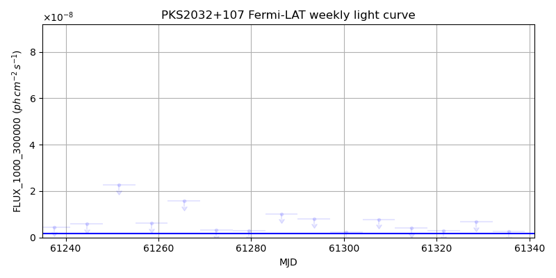

LAT Lightcurve site: https://fermi.gsfc.nasa.gov/ssc/data/access/lat/msl_lc/source/PKS_2032p107
NED: Query
Time of last update of this page: UT: 2026-10-30 15:26 (MJD: 61343.644)
| Property | Value |
|---|---|
| R.A. | 20:35:22.32 |
| Dec. | 10:56:06.0 |
| z | 0.601 |
| 3FGL SpectrumType | PowerLaw |
| 3FGL PL Index | 2.47 |
| 3FGL Flux_100_300000 | 5.18e-08 1 / (s cm2) |
| 3FGL Flux_1000_300000 | 1.76e-09 1 / (s cm2) |
| 3FGL Flux >200 GeV | 7.38e-13 1 / (s cm2) |
| 3FGL Extrap. Crab >200 GeV | 0.00 |
| 3FGL Flux After EBL Absorption >200GeV | 7.49e-14 1 / (s cm2) |
| 3FGL EBL Crab Fraction >200GeV | 0.00 |

| MJD | dMJD | Flux | dFlux | Frac3FGL | FracCrab>200GeV | EBLFracCrab>200GeV |
|---|---|---|---|---|---|---|
| 61338.50 | 0.50 | 4.77e-08 | 0.00e+00 | 0.00 | 0.00 | 0.00 |
| 61339.50 | 0.50 | 8.45e-08 | 0.00e+00 | 0.00 | 0.00 | 0.00 |
| 61340.50 | 0.50 | 9.01e-08 | 0.00e+00 | 0.00 | 0.00 | 0.00 |
| 61341.50 | 0.50 | 4.10e-07 | 0.00e+00 | 0.00 | 0.00 | 0.00 |
| 61342.50 | 0.50 | 3.29e-07 | 0.00e+00 | 0.00 | 0.00 | 0.00 |

| MJD | dMJD | Flux | dFlux | Frac3FGL | FracCrab>200GeV | EBLFracCrab>200GeV |
|---|---|---|---|---|---|---|
| 61307.50 | 3.50 | 1.17e-07 | 0.00e+00 | 0.00 | 0.00 | 0.00 |
| 61314.50 | 3.50 | 1.76e-08 | 0.00e+00 | 0.00 | 0.00 | 0.00 |
| 61321.50 | 3.50 | 3.74e-08 | 0.00e+00 | 0.00 | 0.00 | 0.00 |
| 61328.50 | 3.50 | 5.57e-08 | 0.00e+00 | 0.00 | 0.00 | 0.00 |
| 61335.50 | 3.50 | 2.12e-08 | 0.00e+00 | 0.00 | 0.00 | 0.00 |

| MJD | dMJD | Flux | dFlux | Frac3FGL | FracCrab>200GeV | EBLFracCrab>200GeV |
|---|---|---|---|---|---|---|
| 61338.50 | 0.50 | 1.91e-08 | 0.00e+00 | 0.00 | 0.00 | 0.00 |
| 61339.50 | 0.50 | 1.68e-08 | 0.00e+00 | 0.00 | 0.00 | 0.00 |
| 61340.50 | 0.50 | 1.92e-08 | 0.00e+00 | 0.00 | 0.00 | 0.00 |
| 61341.50 | 0.50 | 2.13e-08 | 0.00e+00 | 0.00 | 0.00 | 0.00 |
| 61342.50 | 0.50 | 1.73e-08 | 0.00e+00 | 0.00 | 0.00 | 0.00 |

| MJD | dMJD | Flux | dFlux | Frac3FGL | FracCrab>200GeV | EBLFracCrab>200GeV |
|---|---|---|---|---|---|---|
| 61307.50 | 3.50 | 7.78e-09 | 0.00e+00 | 0.00 | 0.00 | 0.00 |
| 61314.50 | 3.50 | 4.02e-09 | 0.00e+00 | 0.00 | 0.00 | 0.00 |
| 61321.50 | 3.50 | 2.79e-09 | 0.00e+00 | 0.00 | 0.00 | 0.00 |
| 61328.50 | 3.50 | 6.68e-09 | 0.00e+00 | 0.00 | 0.00 | 0.00 |
| 61335.50 | 3.50 | 2.56e-09 | 0.00e+00 | 0.00 | 0.00 | 0.00 |
--------------------------------------------------------- Using user-supplied coords: 20:35:22.32 10:56:06.0 2000 --------------------------------------------------------- FLWO UT night of: 2026-10-31 Local Sid. @ Midnight: 02:14 Sunset (-15.0) (local, UT): 18:44 01:44 Sunrise (-15.0) (local, UT): 05:31 12:31 Moonrise (local, UT): 21:49 04:49 Moonset (local, UT): Moon phase: 0.68 --------------------------------------------------------- AzTime LSID UT Obj_el Obj_az Mn_el Mn_az Sep. --------------------------------------------------------- 18:44 20:57 01:44 68.8 194.4 -27.0 28.6 137.4 19:14 21:27 02:14 66.2 212.6 -23.9 34.8 137.6 19:44 21:57 02:44 62.1 226.7 -20.2 40.4 137.9 20:14 22:27 03:14 57.1 237.4 -16.1 45.6 138.1 20:44 22:58 03:44 51.4 245.6 -11.6 50.4 138.3 21:14 23:28 04:14 45.5 252.2 -6.7 54.8 138.5 21:44 23:58 04:44 39.3 257.6 -0.9 58.8 138.7 22:14 00:28 05:14 33.0 262.4 3.8 62.5 138.9 22:44 00:58 05:44 26.6 266.7 9.2 66.0 139.0 23:14 01:28 06:14 20.2 270.7 14.8 69.3 139.2 23:44 01:58 06:44 13.9 274.6 20.6 72.5 139.3 00:14 02:28 07:14 7.6 278.4 26.5 75.5 139.5 00:44 02:58 07:44 1.5 282.3 32.5 78.6 139.6 01:14 03:28 08:14 -4.4 286.3 38.5 81.7 139.8 01:44 03:58 08:44 -11.1 290.5 44.7 84.9 139.9 02:14 04:28 09:14 -17.0 295.1 50.8 88.3 140.0 02:44 04:59 09:44 -22.7 300.1 57.0 92.2 140.1 03:14 05:29 10:14 -28.1 305.7 63.2 97.0 140.3 03:44 05:59 10:44 -33.1 312.0 69.3 103.5 140.4 04:14 06:29 11:14 -37.5 319.2 75.2 113.7 140.5 04:44 06:59 11:44 -41.4 327.4 80.4 133.8 140.7 05:14 07:29 12:14 -44.4 336.6 83.0 177.6 140.8 05:31 07:46 12:31 -45.6 342.3 82.2 206.9 140.9 --------------------------------------------------------- Dark hours >55 deg.: 1.69 srcstart (UT): 2026-10-31 01:44 srcend (UT): 2026-10-31 03:25